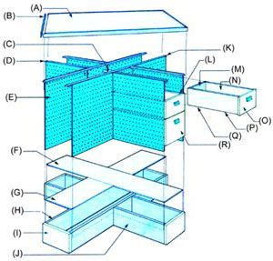

(A) (2) 3/4"" X 4' X 4' A-B PLYWOOD W/GRAIN AT 90? (B) (4) 1 X 1-1/2"" X 49"" MITERED 45? (C) (4) CORNER BRACES (D) (4) 1 X 2 X 22"" (E) (8) 21"" X 28-1/2"" PEGBOARD (F) 1/4"" X 12"" X 55-13/16"" B-B PLYWOOD (G) (2) 1/4"" X 12"" X 21-7/8"" B-B PLYWOOD (H) (2) 1 X 8 X 54-1/4"" (I) (4)1 X 8 X 12"" (J) (4) 1 X 8 X 21-1/8"" (K) (2) 1 X 2 X 54"" (L) 1/4"" X 12"" X 19"" B-B PLYWOOD DIVIDER ON 3/4"" STOCK FRAME (M) 1 x 5-3/8"" x 11-1/4"" BACK (N) (2) 1/4"" X 6-3/8"" X 20-I/4"" B-B PLYWOOD SIDES (O) 1 X 7-1/4"" X 12-1/2"" FRONT (P) (2) 3/4"" X 3/4"" X 19-3/4"" SLIDES (Q) 1/4"" X 11-1/4"" X 20-1/4"" B-B PLYWOOD BOTTOM (R) 9-7/8""-DEEP. 11-1/4""-WIDE, 20-1/4""-LONG DRAWER